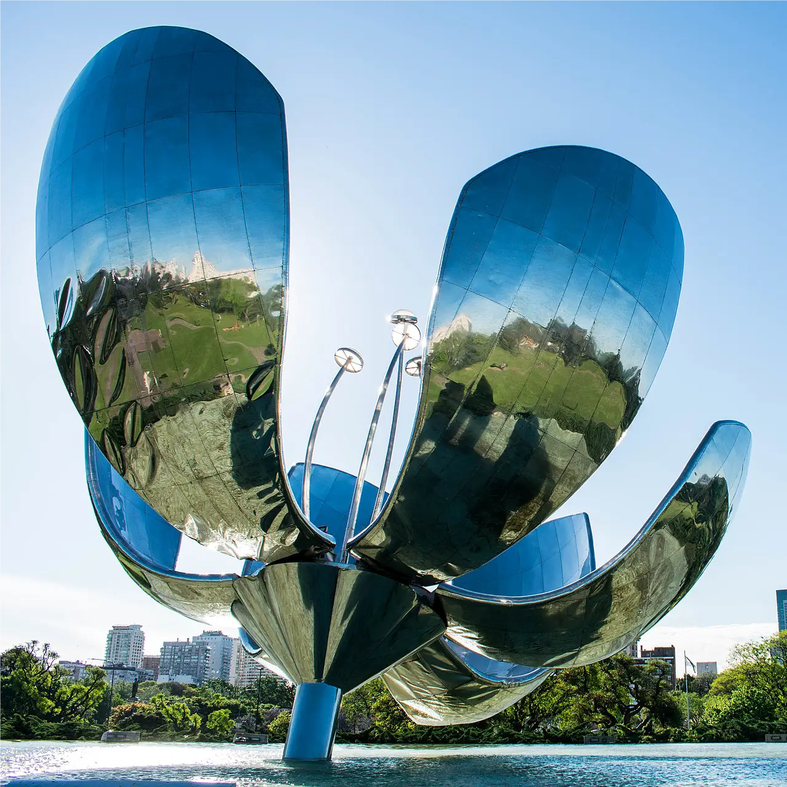
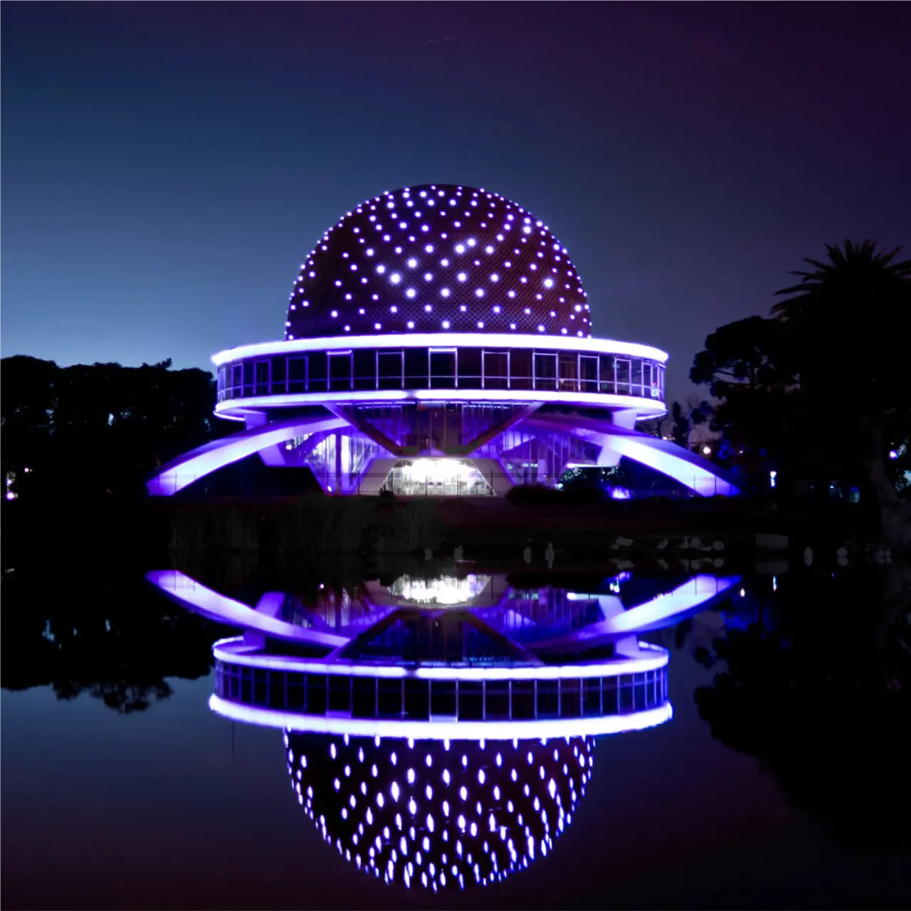
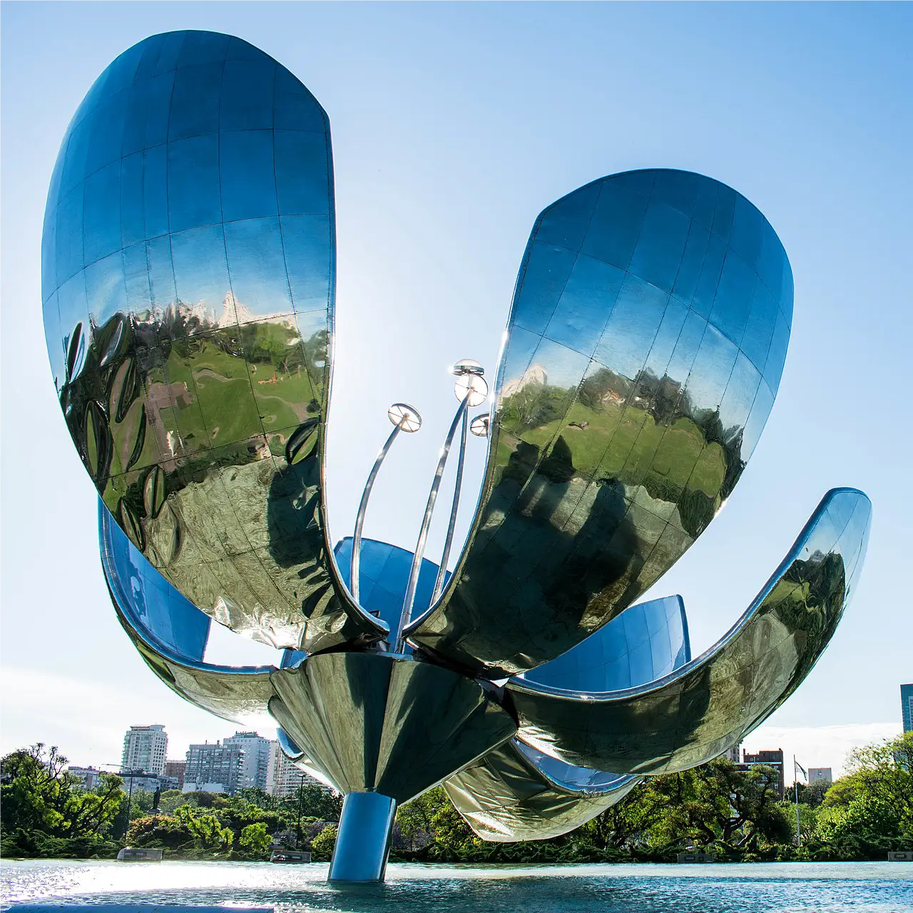
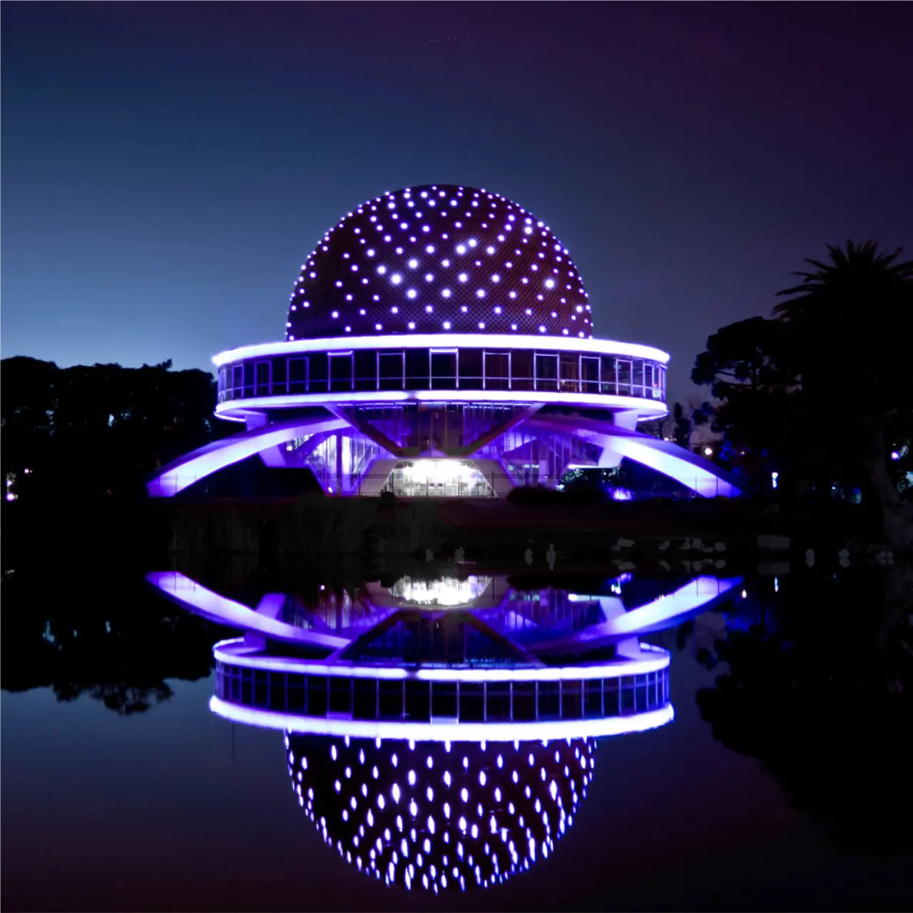

Buenos Aires, Argentina
Argentina, a beautiful country. It is cozy and has iconic places that you can see in the photo gallery. It is incredible that such a beautiful country also has spectacular gastronomy, and yes, this is the case in Argentina. Specifically, the photo gallery refers to iconic places in Buenos Aires. In the first photo you can see the MOST iconic place such as "The Obelisc" or in Spanish called "EL OBELISCO". In the second image you can see a metallic flower located in the United Nations Square. The art is called "Floralis Generica". In the third image you can see the "Planetarium" located by the forests of Palermo, which refers to the idea of a place where we can learn and see more about the universe. In the fourth image we have the "Rosedal" also located in the Palermo neighborhood. Which is a beautiful place for romantics couples, where they can take photos and also eat something outdoors. Finally we find the "Woman Bridge" or in Spanish called "El Puente de la Mujer" It is located in one of the most popular neighborhoods in Buenos Aires, called "Puerto Madero." I love that place, there are many food places where you can sit down to eat and enjoy the wind that Run through those places. Obviously, if one knows if Eat outside and not inside the premises!

 





Next Events
December 24th
Before Christmas

We'll join in the morning and will prepare food for the ones in need!
December 31st
Before 2022
Carry a friend of you and join us to celebrate with food and music the new year!
January 20th
Catering Event

The Catering event is organized by all the local stores around the corner! Join us at the Obelisco!